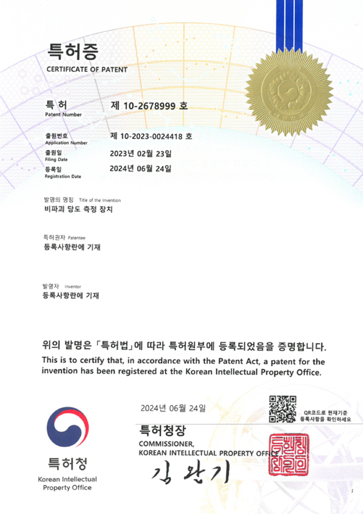
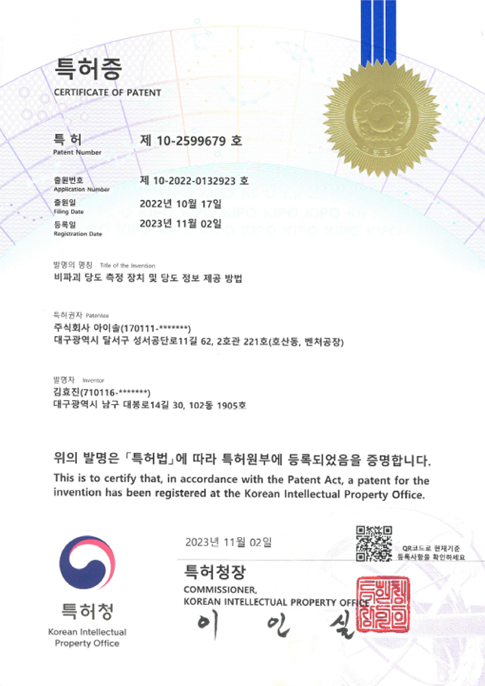
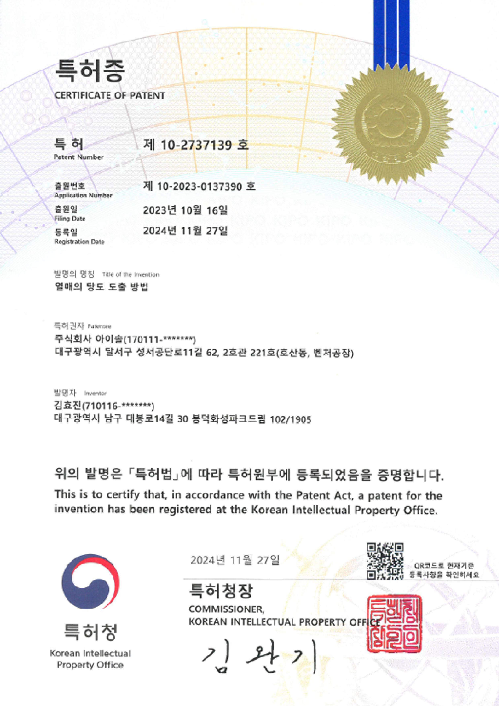
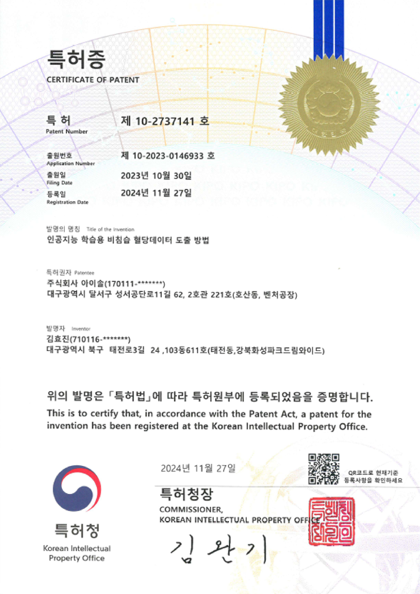
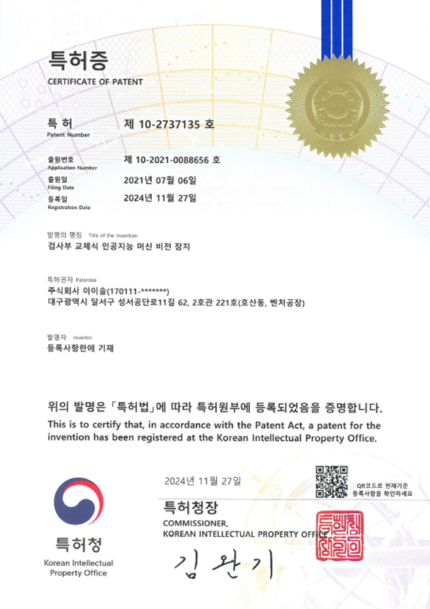
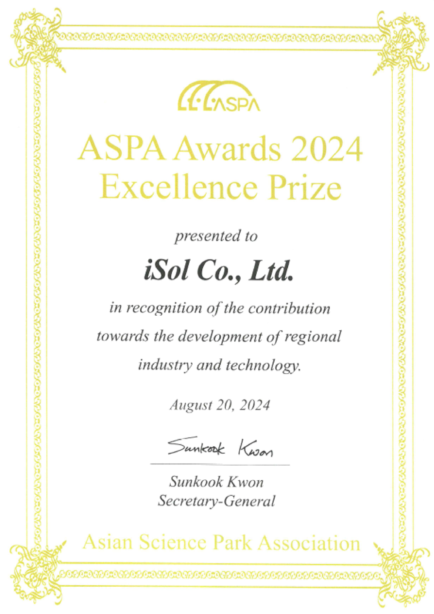
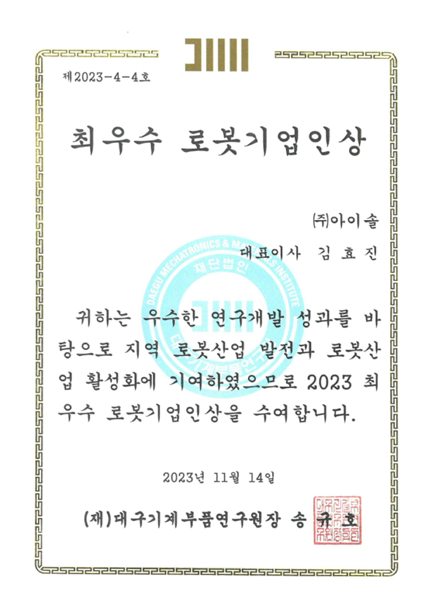
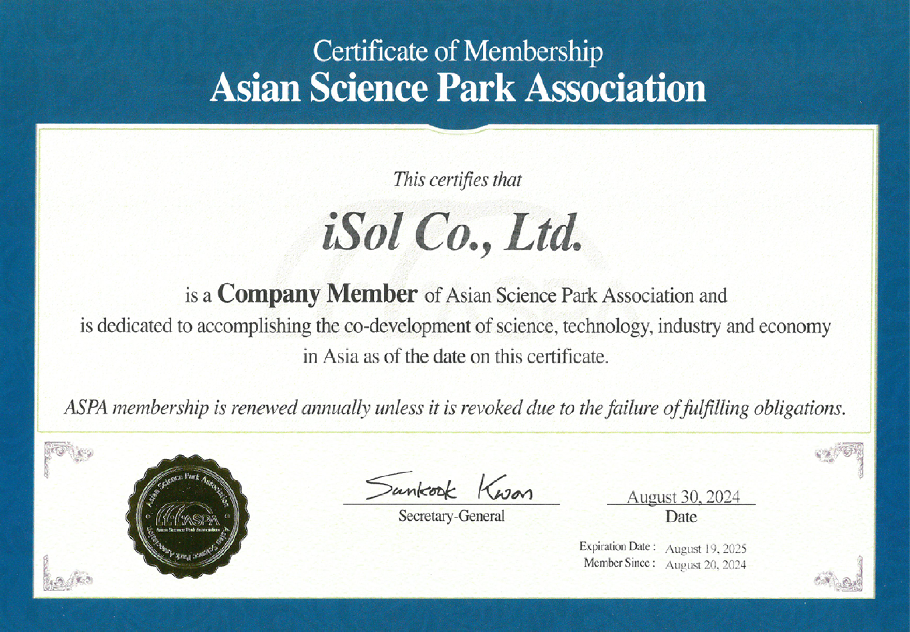

About iSol
About iSol
iSol(아이솔)은 풀 서비스 개발 회사입니다.
2020 년에 설립 된, 우리 회사는 Embedded, Machine Vision, AI, Robot
그리고 Web Application 개발에 많은 경험과 성과를
거두었습니다.
그러나 기술적 가치만을 기준으로 삼지 않고 인간 친화적인 제품을
제작하고 사람을 이롭게 하는 것이 목표입니다.
COMPANY
㈜아이솔은 2020년 4월 설립 신생기업이지만 열정과 혁신이라는
핵심가치를 바탕으로 경쟁력 있는 기술력과 차별화된 솔루션을
제공하며 끊임없이 노력하는 개발멤버들이 함께 하고 있습니다.
㈜아이솔에서는 차별화된 개발 솔루션과 고객만족을 통해
인공지능형
분석장비의 새로운 패러다임을 준비하고 있습니다.
현재 디스플레이 분석장비의 안정적인 성과와 핵심 기술을
바탕으로
4차 혁명을 선도하는 글로벌 기업으로 발돋움 하기 위해 모든
아이솔
멤버들이 최선을 다해 노력하고 있습니다.
빠르게 변해가는 시대에 따라 고객들의 니즈를 충족시키고 더
나아가
기술적 방면에 뛰어난 글로벌 기업이 되고자 끊임없이 달리는
㈜아이솔이 되도록 하겠습니다.
감사합니다.
LOGO
(주)아이솔은 intelligent의 “i” 와 “문제해결”의 의미를 가지는
“Solution”의 합성어로 스마트하게 솔루션을 제안해겠다는
우리의 의지를 담았습니다. 이러한 뜻을 담아 진취적인
곧은 서체와 미래 지향적인 라인을 조합으로 CI를 형상화 하였으며,
기술적이면서도 권위를 느낄 수 있는 Black Gray와
현명하며 지혜로운 Brown 색채를 포인트컬러로 표현함으로써
(주)아이솔 만의 Identity를 시각화 하였습니다.
연혁
-
2020
04 (주)아이솔 설립
05 중소기업청 기술 인증 투자유치
06 예비창업패키지 AI 분야 지원사업 선정 - FPGA 기반의 산업용 Edge AI Vision Inspector
11 기업부설연구소 설립
12 AI 머신 비전 기반 마스크 검사 기술 확보
-
2021
01 예비창업패키지 AI 분야 지원사업 최종 평가 "최우수" 선정(https://www.etnews.com/20210330000067)
02 벤처기업 승인(Certificate No. 20210101498)
06 지역산업 기반 ICT 융합기술 고도화 지원사업 선정 - 딥러닝 머신비전 기반 다품종 제품 인쇄 상태 검사 기술 개발
07 AI 머신비전 기반 정밀 도금 버튼 검사 기술 확보
08 딥러닝 기반 과일(포도) 당도 측정기 기술 개발
10 창업 성장 기술개발 사업 - 딥러닝 머신비전 기반 원단 외관 자동화 검사 시스템 개발
11 Kibo-Star 밸리 기업 선정(Certificate No. 2021-0113)
12 AI 머신비전 기반 원단 검사 기술 확보
-
2022
03 딥러닝 기반 당도 측정기 특허출원
04 스마트 팩토리 AMR 야간 감시 기술 확보 유상증자: (주)유토시스
05 AI 머신비전 기반 파스너 검사 기술 확보 사무실 확장 이전(대구테크노파크 벤처 공장)
07 대구시 육성 사업 차세대 선도 과제 선정 - 딥러닝 (고도화) 기반 온도 외란광 개선 비파괴 과일(포도) 당도 측정기
-
2023
04 비파괴 당도계 제품 출시
05 창업 사업화 지원사업 선정 - 딥러닝 기반 외란광 제거 알고리즘 적용 AI 비파괴 과일(포도) 당도 측정기
07 대구보훈병원 협력 - AI 비침습 혈당계와 돌봄 서비스 로봇 기술 개발 차세대 서비스 로봇 개발 대구시 육성 사업 선정 - 비침습 혈당계 연동 돌봄/의료 융합형 서비스 로봇 개발
11 "최우수" 로봇 기업인상 수상 "비파괴 당도 측정 장치 및 당도 정보 제공 방법" 특허 등록(10-2599679)
-
2024
01 산업용 AI OCR 검사 기술 확보
06 "비파괴 당도 측정 장치" 특허 등록(10-2678999) 마약류 관리 스마트 랙 기술 확보
07 ASPA Awards 2024 Excellence Prize 수상
09 자율주행 돌봄 서비스 로봇 실증 사업 실시
10 소규모 대기배출시설 IoT 게이트웨이 기술 확보(한국환경공단 제품인증 획득)
11 대구보훈병원 협력 - 인간형 간호 서비스 로봇 기술 개발 "열매의 당도 도출 방법" 특허 등록(10-2737139) "인공지능 학습용 비침습 혈당데이터 도출 방법" 특허 등록(10-2737141) "검사부 교체식 인공지능 머신 비전 장치" 특허 등록(10-2737135)
-
2025
현재 미래 혁신 중..
PATENT
- 
- 
- 
- 
- 
AWARD
- 
- 
- 